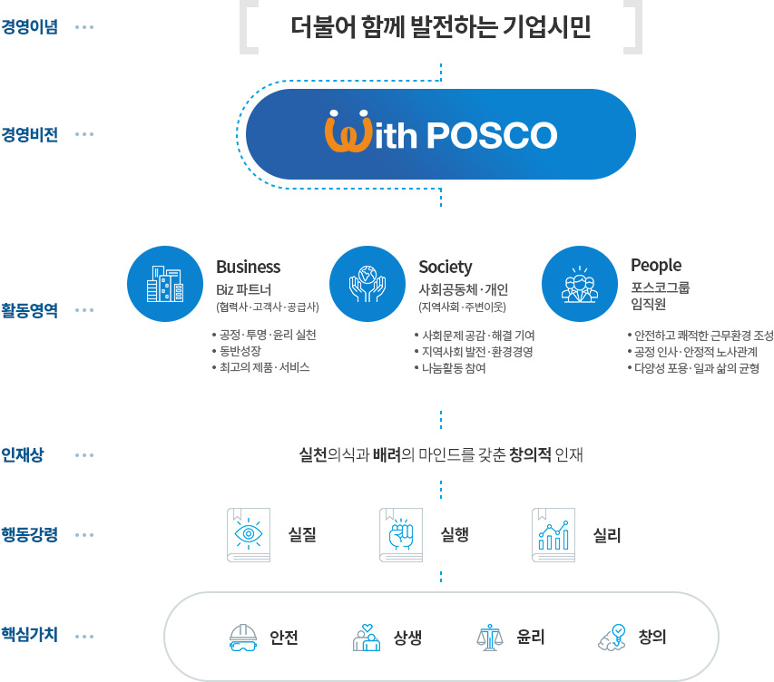

포스코그룹의 핵심가치는 '안전', '상생', '윤리',
'창의'입니다.
'안전'은 인간존중을 우선으로 직책보임자부터 솔선수범하여
실천우선의 안전행동을 체질화하는 것입니다.
'상생'은 배려와 나눔을 실천하고 공생발전을 추구하며, 사회적
가치창출을 통하여 함께 지속성장하는 것입니다.
'윤리'는 사회 구성원 간 상호신뢰를 기반하여 정도를 추구하고
신상필벌의 원칙을 지키는 것입니다.
'창의'는 열린사고로 개방적인 협력을 통하여 문제를 주도적으로
해결하는 것입니다.
경영이념 체계도

기업시민헌장
'더불어 함께 발전하는 기업시민' 경영이념 실현을 위한
지향점과 실천원칙 등을 담은 ‘포스코 기업시민헌장’을
2019년 7월 25일 선포하였습니다.